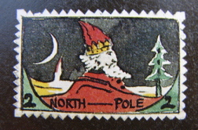
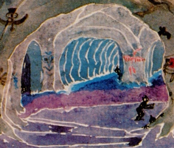
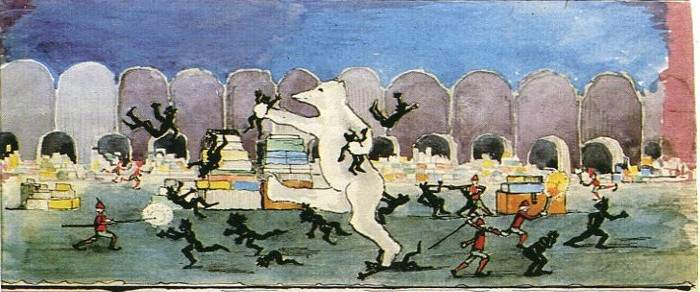
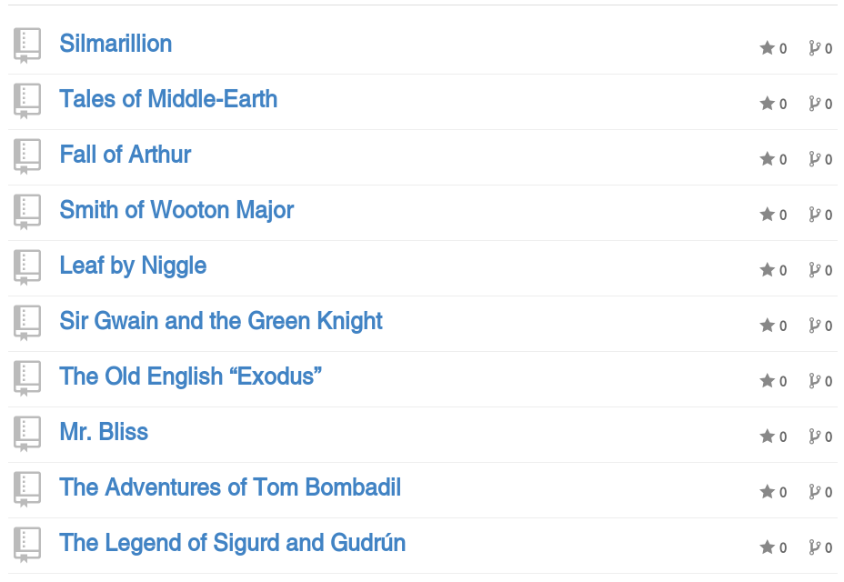

@brandon_rhodes
PyGotham
2014
December 1929
Oxford professor
J.R.R. Tolkien
has a secret
A habit that he practices secretly, alone, known only to his family
He writes things
about Elves
Languages
Linguistic history
Languages
Linguistic history
High heroic legends
I can guess your question:
Why would a
compulsive Elf-chronicler
need encouragement?
Remember: this is a man—

Father Christmas. Comic sidekick North Polar Bear. Snowman.
1929 he first thinks to mention the snow-elves.
If there are elves, there must be—


Your question is probably not
“How could we encourage Tolkien”
but rather, “How can this man be stopped?”

He needed an audience not only so we would hear of him.
But because it transformed the writing.
Writers
You are a writer. Of texts. Tweets. Email. Maybe even of programs.
We should study writers and their motivations.
1929
Tolkien loans
Lay of Leithian
to Jack Lewis
Tolkien took the risk of showing his work to a friend.
Jack Lewis wrote
back the next day
“it is ages since I have had
an evening of such delight”
Tolkien, years later:
“He was for long
my only audience.
“Only from him
did I ever get the idea
that my ‘stuff’ could be
more than a private hobby.”
But having an audience also changed the work itself
There is something
else a writer needs
“Good stories are
not about the teller.”
— Julie Steele
“If a story is not
about the hearer he
will not listen”
— Steinbeck
The second thing you need to produce reader-directed prose
is feedback letting you step outside of yourself
and see how your writing looks to others
Jack Lewis handed back
14 pages of criticism
But how could he express it
so as not to discourage Tolkien
Dialog between 4 scholars
about this “ancient manuscript”
This allowed Jack to recast criticisms of the work
as speculations about its redactors and scribes
“The latest redactors were
always needlessly amplifying,
as if the imagination of
their readers could do
nothing for itself”
“the assonance …
must originally have occurred
often, and have been suppressed
elsewhere by the scribes.”
Had the scholars quote
from “another copy”
of the manuscript!
it worked
Jack was good at
sensitive criticism
Tolkien was fortunate in his choice of a first critic
A children’s book illustrator
was not drawing children well
“I know you made the
children rather plain — in
the interests of realism —
“I know you made the
children rather plain — in
the interests of realism —
but do you think you could
possibly pretty them up
a little now?”
Jack and “Tollers”
were soon meeting
with more writers
In a context where criticism could be more bruising
Inklings
Met in Jack Lewis’s rooms
at Magdalen College
Jack at the center — “big man with a large red face
and shabby clothes … addressing his audience in a loud,
booming voice”
“This was the
ethos of the whole thing.
That criticism was free”
— Dr. Havard
“Praise for good work
was unstinted, but censure
for bad work — or even
not-so-good work — was
often brutally frank.”
— Warren Lewis
“… had an outsider
eavesdropped he would
have thought it a meeting of fell
enemies hurling deadly insults
before drawing their guns.”
(Written of one particularly memorable evening with the Inklings)
“To read to the Inklings
was a formidable ordeal”
The Inklings always read
drafts to one another
Anne Ruggles Gere
researches both
writers and writing
In some writer’s groups,
she has noticed something
going very wrong
“when participants
in writing groups read
‘finished’ writing, the language
of the group often became
acerbic or vacuous
— Anne Ruggles Gere
“—because members felt
(perhaps unconsciously)
that they had no purpose”
— Anne Ruggles Gere
Suggests: criticism of an early draft
is not only easier for the writer,
but less likely to trigger anger in the critic
It was also an environment
that made writers think about
clever versus clear writing
“All the Inklings had learned
by experience that passages
valued most by the writer
appealed least to
the reader.”
— Dr. Havard
:strike:` Clever ` or Clear
Tolkien needed one last thing
The result was that he experienced his first commercial success
1930–1932
Drafted The Hobbit
Came about while grading papers
“In a hole
in the ground
there lived a Hobbit…”
Tolkien had little incentive to finish the draft
once his children were too old.
Jack Lewis
Elaine Griffiths
Susan Dagnall
Stanley Unwin
Over the years the mss. was seen by Lewis,
a student, her friend, her employer, and his son —
and Tolkien now had a publisher and a deadline!
1936–1937
The Hobbit finished
and published
Published on September 21, 1937.
Christopher Tolkien wrote to Father Christmas
telling him to give it to children as gifts.
Christmas 1937
“we had to rush the
reprint through …
“the crisis was
so acute that we fetched
part of the reprint from our
printers … in a private car”
“a large public will
be clamoring next year
to hear more from you
about Hobbits”
:big:` a` Critic
a Deadline
System Message: WARNING/2 (slides.rst, line 678); backlink
Inline interpreted text or phrase reference start-string without end-string.
Let's watch as these elements now work together
to generate the sequel
“Not ever intending
any sequel, I fear I
squandered all my
favorite ‘motifs’
and characters on
the original ‘Hobbit’.”
Chapter 1
“A Long-Expected Party”
Chapter 1
“A Long-Expected Party”
Chapter 1
“A Long-Expected Party”
Hobbits talking
Hobbits eating meals
Chapter 1
“A Long-Expected Party”
Hobbits talking
Hobbits eating meals
Hobbits playing pranks
“‘hobbit talk’
amuses me … more
than adventures”
“can contemplate them
eating and making their
rather fatuous jokes
indefinitely”
Inklings
Tolkien did not know what to do
24 July 1938
“Mr Lewis says hobbits
are only amusing when in
unhobbitlike situations.”
“It is now flowing along,
and getting quite out of hand.
“It has reached about
Chapter VII and progresses
towards quite unforeseen goals”
fairy tale
The first book had sent a Hobbit into a fairy tale.
:strike:` fairy tale `
The New Hobbit would be an epic,
set in the last days of the Elven legends
he had been developing for decades.
This at last would surface them!
The Wager
Two years before in 1936 —
not enough books they enjoyed —
Lewis space travel, Tolkien time travel,
Númenor entered mythology as well.
:strike:` The New Hobbit `
1943
Air raid warden
Two sons in the war
1943
Air raid warden
Two sons in the war
Tolkien wrote nothing
“dead stuck”
March 1944
Lunch with Jack Lewis,
who read from a new
book he was writing!
Jack urged Tolkien
to resume the work
So Tolkien started up again
“I have seriously
embarked … & have been
sitting up rather late …
— to Christopher Tolkien
“I have gone back to
Sam and Frodo … at the
moment they are just meeting
Gollum on a precipice.”
The Inklings began again
to be subjected to regular
readings from Tolkien
subjected?
Well, not all of them appreciated being part of such a long project
“When Tolkien came through
the door at a meeting of the
Inklings with a bulging jacket
pocket, I winced …”
— Dr. John Wain
“—because I knew we
were in for a slab of
Gandalf and Bilbo Baggins
and the rest of it.”
— Dr. John Wain
“I just can’t get into that
Lord of the Rings trilogy.
I cannot finish it.”
— Dr. Owen Barfield
Hugo Dyson
A big personality who taught English at Oxford.
He would grab his cocktail,
fling himself on the couch,
and interrupt with legendary Oxford wit
Oh fuck.
Not another elf!
— Hugo Dyson
Dyson interrupted Tolkien regularly.
CT says:
“I remember this very vividly,
my father’s pain, his shyness,
which couldn’t take Hugo’s extremely rumbustious approach.” — CT
Tolkien never had to answer the insult himself
Jack
“Shut up Hugo.”
“Come on Tollers.”
Tolkien was defended every time he was attacked.
But in the end,
1947
Tolkien would no longer
read from the “new Hobbit”
with Dyson present
Thursday 24 April.
“just as we were starting
… we had to stop”
— Warren Lewis’s diary
:strike:` critique `
:strike:` criticism `
:strike:` critique `
:strike:` criticism `
opposition
Become his opponent.
It does not matter,
in the end,
whether everyone jumps to Tolkien’s defense.
Eventually, Tolkien will tire
Eventually, Tolkien will tire
of needing to be defended
The Inklings meetings
began to falter
Jack Lewis also
tried writing fantasy
Jack Lewis also
tried writing fantasy
Tolkien found it
“about as bad as can be”
Jack’s story
Children
:strike:` Greek faun `
Jack’s story
Children
:strike:` Greek faun `
Nice tea-sipping faun
Jack’s story
Children
:strike:` Greek faun `
Nice tea-sipping faun
Wicked Snow Queen
Jack’s story
Children
:strike:` Greek faun `
Nice tea-sipping faun
Wicked Snow Queen
Father Christmas
Jack’s story
Children
:strike:` Greek faun `
Nice tea-sipping faun
Wicked Snow Queen
Father Christmas
Lion
Jack’s story
Children
:strike:` Greek faun `
Nice tea-sipping faun
Wicked Snow Queen
Father Christmas
Lion
Writers are not interchangeable.
And even Lewis got hurt.
1949
Thursday 20 October.
“No one turned up after dinner”
1949
Thursday 27 October.
“No Inklings tonight”
What effect would this have on the Lord of the Rings?
Look at the year.
We have done it.
We have reached 1949.
1949
Tolkien was finished
and submitted the draft
Tolkien delivered a complete manuscript of the Lord of the Rings.
All he needed now was another 5 years to rewrite and re-edit
1954–55
published by
Allen & Unwin
Brought to print by editor Rayner Unwin,
the son of Stanley Unwin!
Eventually 150 million copies —
even more than The Lion, the Witch, and the Wardrobe!
Tolkien lived almost
twenty more years
He never published
another book
Essays, yes. Short stories, poems, yes.
But never another full-length book.
He returned to his endless work
with Elven legend, history, and language.
This was no longer a secret —
and he showed the drafts to his publisher —
But he was writing for himself.
The Silmarillion never went through the wrenching process
of being critiqued and reworked to face an audience.
Being a
good critic
is an Art
Unless you work alone,
you are writer and critic both.
Surgeons use the sharpest possible tools.
When you criticize,
you are doing surgery on the person behind it.
Learn to be sharp and specific.
To do the least harm.
Thank you very much!
@brandon_rhodes